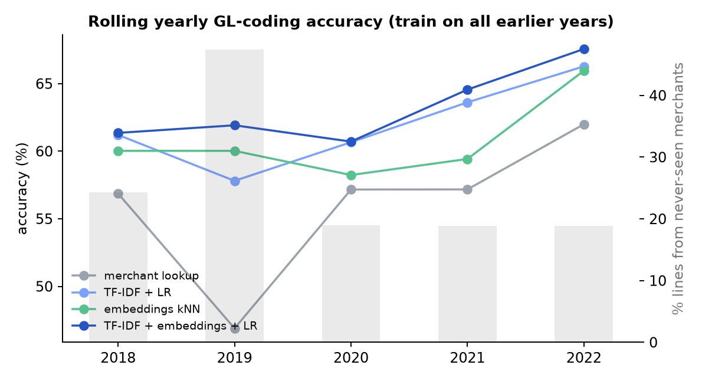
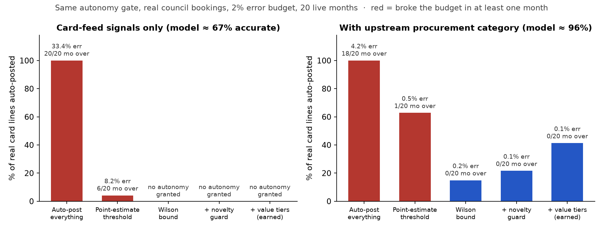
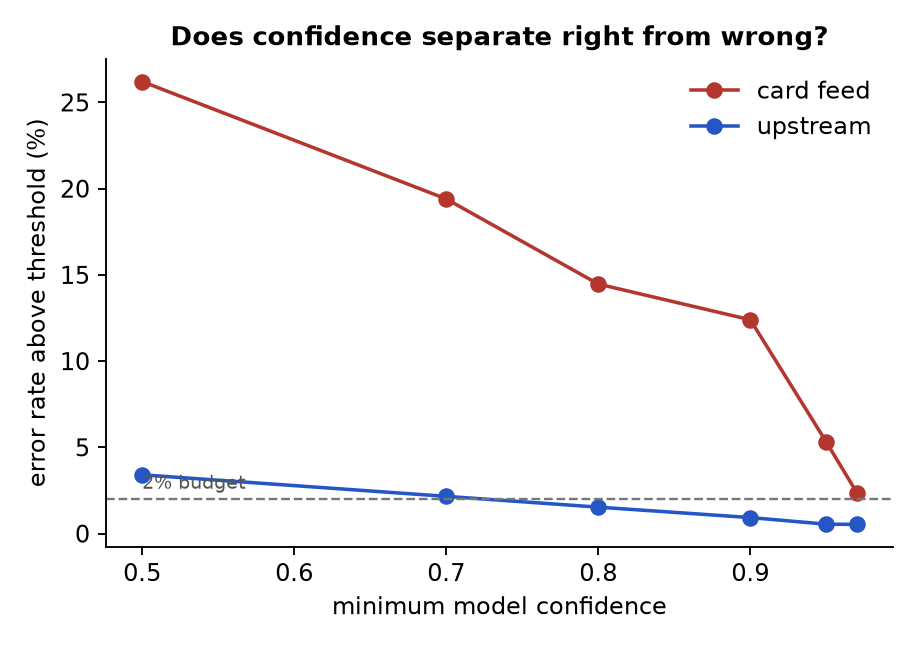
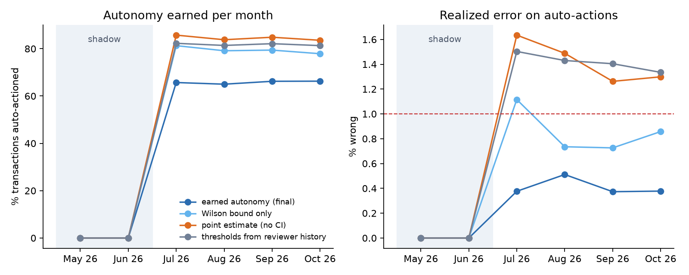

When should a finance agent act without a person checking?
Finance teams want agents to do routine bookkeeping: code each card transaction to a ledger account, approve or flag expense claims. The part I care about is deciding when one is safe to leave alone. Most systems answer with a confidence threshold that someone picked by feel. TrustGate answers with evidence. The agent may act alone on a kind of transaction only when audits of its past work put a 95% upper bound on its error rate under a budget. The bound is recomputed every month, so autonomy can be lost as well as earned.
I tested it on 14,851 purchase-card lines from Stockport Council that finance staff booked by hand (2017–2022), and on a simulated expense-policy agent where the right answers are planted.
What I found
- Where the data supports it, the gate earns real autonomy. With the council's procurement category available, the agent posted 41.3% of lines on its own at 0.13% error (95% upper bound 0.46%) and went over the 2% budget in 0 of 20 months.
- Where it doesn't, the gate refuses. From card-feed fields alone the model is 66.6% accurate, and its confidence does not separate right answers from wrong ones, so the gate granted nothing. Posting everything would have mis-booked £242,402. A threshold set from the average audited error unlocked 4.2% of lines at 8.2% error and broke the budget in 6 months. On this data the useful product is a shortlist: the right account is in the model's top three 86.4% of the time.
- The coding model is a real baseline, not a strawman. From card-feed fields it reaches 62.4% accuracy (95% CI 61.5%–63.3%) against 54.5% for a merchant lookup, and 40.7% on merchants it has never seen, against 15.8%. Staff code identical inputs differently often enough that no model can beat 86.1%.
- The simulated policy agent tells the same story. Earned autonomy stayed inside its budget in 10/10 seeds and in 16 of 16 sensitivity settings. Thresholds from the average audited error broke it in 10/10 seeds.
Coding real card transactions
Each year from 2018 to 2022 is predicted by a model trained only on earlier years. The card-feed setting uses what a card platform sees: the merchant string, the cardholder's department and service, and the amount.
Table 1. Ledger-account accuracy from card-feed fields, 11,756 test lines.
| Model (card-feed signals only) | Accuracy | 95% CI | Top-3 | Accuracy on new merchants | Macro-F1 |
|---|---|---|---|---|---|
| Majority class | 17.0% | 16.3%–17.6% | – | 11.4% | 0.019 |
| Merchant → account lookup | 54.5% | 53.6%–55.4% | – | 15.8% | 0.313 |
| Local embeddings, kNN | 60.1% | 59.2%–61.0% | 78.4% | 37.3% | 0.339 |
| Char TF-IDF + logistic regression | 60.9% | 60.0%–61.8% | 80.7% | 34.6% | 0.354 |
| Local embeddings + logistic regression | 61.3% | 60.4%–62.2% | 82.5% | 38.9% | 0.366 |
| TF-IDF + embeddings + logistic regression | 62.4% | 61.5%–63.3% | 82.9% | 40.7% | 0.379 |

The gate on real data, month by month
The agent then ran live for the final 20 months (3,826 lines). Each month it was refit on earlier data, 40 random lines were audited, and the gate set thresholds from earlier audits only. The same gate ran on two versions of the data: card-feed fields only, and those fields plus the procurement category staff assign upstream.

Table 2. The same rollout as a table. Each row adds one safeguard to the row above.
| Policy (2% error budget) | Card feed: auto-posted | error | months over budget | Upstream: auto-posted | error | months over budget |
|---|---|---|---|---|---|---|
| Auto-post everything | 100.0% | 33.4% | 20/20 | 100.0% | 4.18% | 18/20 |
| Point-estimate threshold | 4.2% | 8.2% | 6/20 | 62.8% | 0.50% | 1/20 |
| Wilson upper bound | 0.0% | 0.0% | 0/20 | 14.9% | 0.18% | 0/20 |
| + novelty guard | 0.0% | 0.0% | 0/20 | 21.6% | 0.12% | 0/20 |
| + value tiers (earned autonomy) | 0.0% | 0.0% | 0/20 | 41.3% | 0.13% | 0/20 |

A simulated policy agent
Expense-policy decisions (approve, reject or send for review, citing the policy section) have no public labels, so this part uses a documented generator with planted ground truth. Every assumption in it is varied in Table 5.
Table 3. Live months, mean ± standard deviation across seeds, 1% error budget.
| Autonomy policy (mean ± sd over 10 seeds) | Auto-actioned | Error on auto-actions | Seeds over the 1% budget | Policy leakage | Total cost |
|---|---|---|---|---|---|
| Trust the rules engine everywhere | 88.7% ± 0.5% | 5.36% ± 0.37% | 10/10 | $24,270 ± $4,382 | $30,542 |
| Thresholds learned from reviewer history | 80.4% ± 1.6% | 0.97% ± 0.38% | 6/10 | $6,612 ± $3,529 | $10,475 |
| Audited gold, point-estimate threshold | 84.7% ± 0.7% | 1.44% ± 0.23% | 10/10 | $11,087 ± $2,772 | $14,197 |
| + Wilson upper bound | 75.1% ± 8.7% | 0.68% ± 0.31% | 2/10 | $4,055 ± $2,274 | $8,985 |
| + novelty guard | 71.8% ± 7.3% | 0.45% ± 0.14% | 0/10 | $3,955 ± $1,697 | $9,513 |
| + value tiers = earned autonomy | 62.3% ± 11.1% | 0.45% ± 0.13% | 0/10 | $1,415 ± $693 | $8,866 |

Table 4. Dropping one safeguard at a time.
| Ablation (drop one safeguard) | Auto-actioned | Error on auto-actions | Policy leakage |
|---|---|---|---|
| Full policy | 62.3% | 0.45% | $1,415 |
| − Wilson bound (point estimate) | 77.3% | 0.69% | $4,516 |
| − novelty guard | 65.7% | 0.72% | $2,387 |
| − value tiers | 71.8% | 0.45% | $3,955 |
Table 5. Does the conclusion survive changing the generator's assumptions?
| Assumption varied | Values | Earned autonomy within budget | Point estimate within budget |
|---|---|---|---|
| Reviewer leniency | 0.0, 0.03, 0.06, 0.1, 0.15 | 5/5 | 0/5 |
| Memo drift rate | 0.0, 0.15, 0.35, 0.5 | 4/4 | 1/4 |
| Audits per month | 100, 250, 500, 1000 | 4/4 | 0/4 |
| Error budget | 0.005, 0.01, 0.02 | 3/3 | 1/3 |
The warehouse underneath
The data layer is dbt on DuckDB over every file the council has published since 2017, reconciled row for row against a SHA-256 manifest. The lineage graph and column docs are browsable.
Table 6. What the warehouse holds and the checks it runs.
| Check | Result |
|---|---|
| Source files downloaded (SHA-256 manifest) | 111 (110 unique; 4.5 MB) |
| Statement months covered | 2017-01 to 2026-10 |
| Card lines in the warehouse | 33,377 (£4,217,508 after refunds; amounts are net of VAT to 2022-06 and gross after, as published) |
| Lines with a booked GL account (incl. refunds; scoring excludes them) | 15,355 |
| Placeholder labels excluded from scoring | 58 |
| Refund lines | 1,160 |
| Distinct raw merchant strings → normalised merchant keys | 7,288 → 3,431 |
| Publisher layouts reconciled | v1_net_10col (2017-01 to 2022-06, 14,737 lines), v2_net_8col (2020-02 to 2020-06, 676 lines), v3_gross_6col (2022-07 to 2026-10, 17,964 lines) |
| Settlement-before-purchase dates (dbt warning) | 1,960 lines |
| Possible duplicate charges (same merchant + amount within 3 days) | 871 (£173,972) |